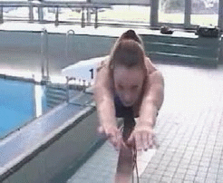
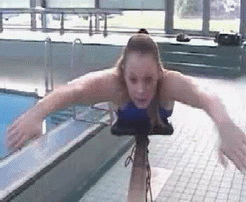
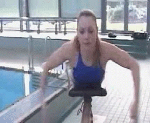
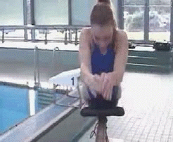
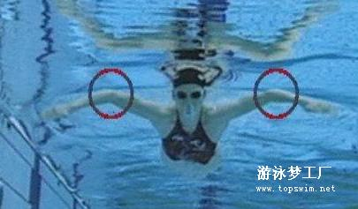
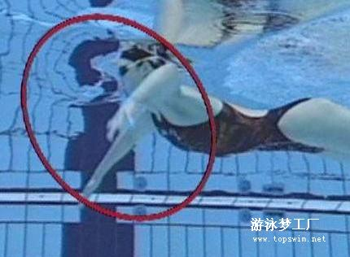
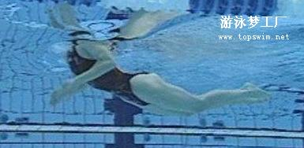
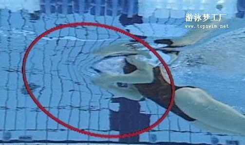
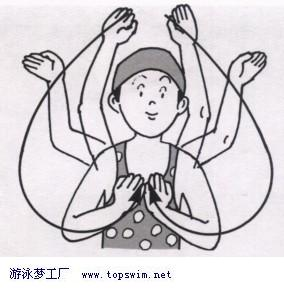
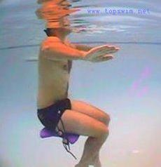

蛙泳划手练习
把以上蛙泳划手动作特写分解成【分、划、收、伸】四部分来看:
【分】

【划】

【收】

【伸】

以上4步，可先各自分开单步来做，再逐步合并，例如: 分－划、分－划－收、分划收伸等等，直至做到整个手部动作完整顺畅为止。
详细的划臂技术要领及具体练习方法：
现代蛙泳技术强调发挥手臂的划水作用，臂部动作在划水过程中能形成较大的对水面，因而能取得较好的推进效果。蛙泳臂的一个动作周期，可分为外划、内划、伸臂三个阶段。
1、 外划
外划时，两臂内旋使掌心转向外下方，并同时直臂对称地向外向后向下方划水。两手分开超过肩宽时，手臂略外旋，屈肘，屈腕，手掌从朝外下方转为朝向外后和下方，此时手掌和前臂应有抓住水的感觉（如下图）。抓水动作主要是为后面的划水创造条件，对上体有支撑和平衡作用，并能产生一定的推进力。随着两臂的继续外划，手臂外旋，逐渐加大屈肘程度，两手沿向外、向下、向后方向划水。当两手划至肩的前侧下方时达到最宽点，这时两臂分开大约120度，外划结束，紧接转入内划。

外划的整个过程应始终保持两手之间的距离大于两肘之间的距离，肘高于手，划水速度逐渐加快，肘关节随外划的进行不断加大弯屈的程度，到外划结束时，肘关节屈至90-120°，手位于肩的前下方（如下图）。

2、内划
内划是外划的继续，正确的内划动作不但可以产生推进力，也可产生使身体上升的力。外划结束时，手臂向外旋转，手同时由向外，向下，向后划水快速转为向内、向上和向前的划水，两手掌转为斜相对。内划结束时，两手位于头的前正下方，肘的位置低于手，肘关节弯曲成锐角（如下图）。手臂的这一快速转变动作方向的动作也有人称它为“收手”或“回臂”。
内划产生的推动力是划水过程中最大的。在内划过程中，当两手的划水动作由向外和向下转为向内和向上时，肘关节应随手沿向下、向内、向上的运动方向做夹肘动作。由于内划阶段推进作用大，因此应尽量延长这阶段的划水路线，双手要划至颌下方接近合拢时才开始伸臂，避免过早进入伸臂阶段，减少推进力。内划动作应强调手掌划水带动向内夹肘动作，既手掌内划早于肘向夹的动作

3、伸臂
伸臂是在内划的基础上进行的，当两手内划至下颌下方接近并拢时开始前伸。伸臂是通过向夹肘动作和手指前伸动作，完成向前伸肘、伸肩直至两臂成伸直姿势（如下图）。伸臂开始时掌心相对，在伸臂即将结束时掌心转为向下，伸臂结束时手腕自然伸直，两手并拢。伸臂动作一般在水下或接近水面完成，但也有运动员为减小阻力采用在水面上伸臂的方法。
快速向前伸臂是现代蛙泳技术特点之一，它紧密配合腿的动作，在伸臂的同时，向前伸肩，伸臂动作中间不能有停顿。

蛙泳桃型划手线路

划手常见错误：
1.双手向前伸直后，没有短暂的滑行就开始抓水。
2.划水角度不当，致使手掌抓不到水。
3.划水动作侧分过大或后划过多。
4.划水时手掌未做向外、向内翻掌划水之动作。
做这个练习，体会水的手感：
